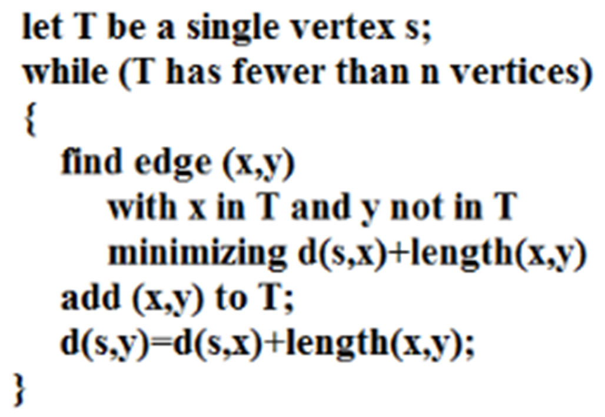
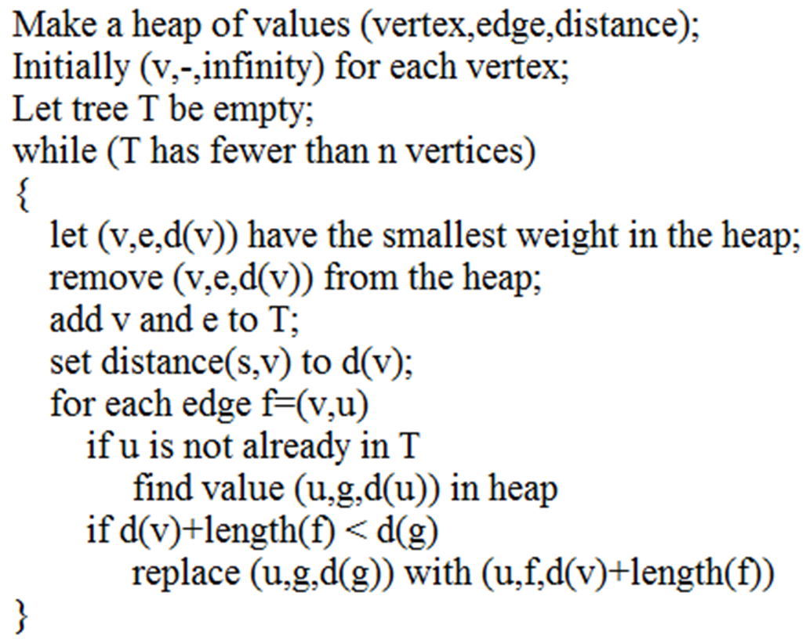
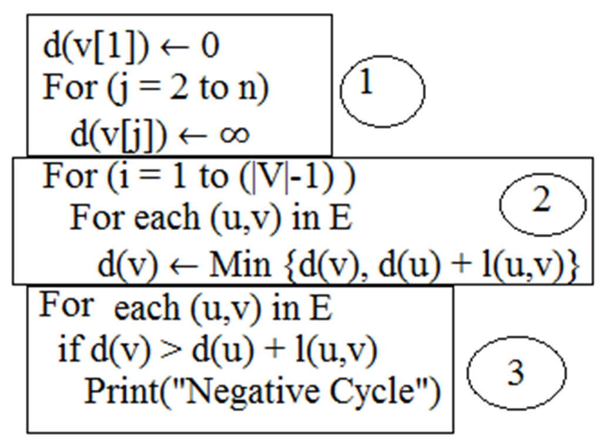
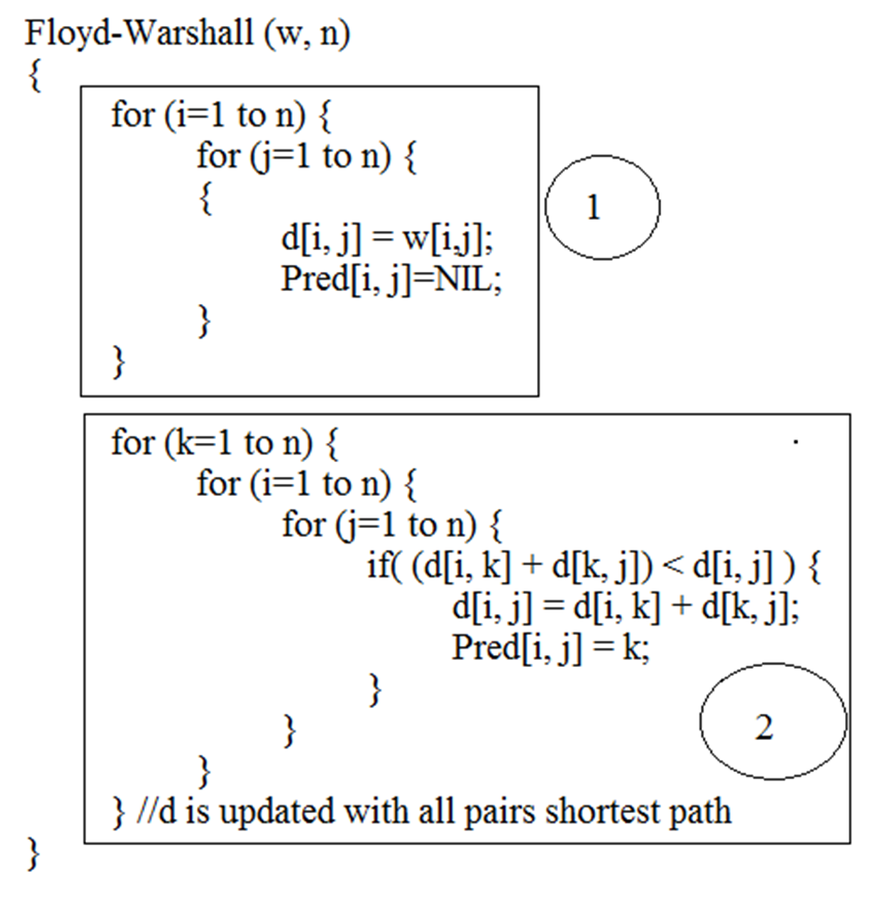

Shortest Path
Graph: nodes/vertices, and edges/arcs as pairs of nodes.
Directed graph: each edge (directed/undirected) has a weight.Path between a pair of nodes vi, vk:sequence of edges with vi, vk at the two ends.
Simple path:covers no node in it twice.
Loop:a path with the same start and end node.
Path length:number of edges in it.
Path weight: total wt of all edges in it.
Connected graph:there exists a path between every pair of nodes, no node is disconnected.
Strongly-connected component: a subgraph in which there is a path between every pair of nodes
- The whole graph could be strongly connected.
- Only a single node could form its own SCC.
SCC creates partition of nodes in a graph: every node is in a SCC, & no node is outside all SCC’s.
A sub-graph of a SCC could be an SCC itself, although not necessarily.
Each Spanning Tree of a graph is a strongly connected component of G.
For every pair of nodes (v, w) in any Spanning Tree of a graph there exists a path v->w and a path w->v.
Every spanning tree is a sub-tree of a spanning tree of a graph.
Graph Algorithms:
- Graph traversal with visitor support: BFS, DFS
- Cycle detection
- Connected components
- Topological sorting
- Shortest paths: Dijkstra, Floyd-Warshall, A*
- Minimum spanning trees: Prim, Kruskal
- Flow: Minimum Cut
- Random graph generation
Single Source Shortest Paths
Shortest path problem is to determine one or more shortest path between a source vertex s and a target vertex t, where a set of edges are given.
Consider a directed graph G = (V, E) with non-negative edge weight and a distinguished source vertex, s ∈ V. The problem is to determine the distance from the source vertex to every other vertex in the graph.
Ex- Dijkstra's Algorithm
- Dijksta's algorithm solves the single source shortest path problem on a weighted directed graph.
- It is Greedy algorithm.
- Dijkstra's algorithm starts at the source vertex, it grows a tree T, that spans all vertices reachable from S.
- Dijkstra's algorithm works similar to Prim's algorithm.
- It uses BFS (Breadth First Search) to find the shortest distances.
- The following simple algorithm explains the working principle of Dijkstra's algorithm.


Analysis of Dijkstra's Algorithm: Time complexity is similar to Prim's algorithm
- Using Heap : Time complexity is O( |E| log |V| )
- Using Fibonacci Heap : Time complexity is O(|E| + |V| log |V| )
- Using Adjacency list : Time complexity is O(|V|2)
Note: Dijkstra's algorithm does not work with negative edge weights. It is important to know that Dijkstra's algorithm requires that weights of all edges are non-negative. Otherwise the procedure is not able to determine whether the shortest path for the node was already found or not.
Bellman Ford Algorithm
- Bellman-Ford algorithm solves the single-source shortest-path problem in the general case in which edges of a given digraph can have negative weight as long as given graph G contains no negative cycles.
- Bellman Ford not uses Greedy approach to find the shortest paths.
- The algorithm requires that the graph does not contain any cycles of negative length, but if it does, the algorithm is able to detect it.

Analysis of Bellman Ford Algorithm:
We assume that the algorithm is run on a graph G with |V| nodes and |E| edges. Let |V|=n, and |E|=m.
- At the beginning, the value ∞ is assigned to each node.This requires O(n)
- Then we do the n-1 phases of the algorithm: one phase less than the number of nodes. In each phase, all edges of the graph are checked, and the distance value of the target node may be changed. We can interpret this check and assignment of a new value as one step and therefore have m steps in each phase. In total all phases together require m • (n-1)steps. This requires O(mn)
- Afterwards, the algorithm checks whether there is a negative circle, for which he looks at each edge once. Altogether he needs m steps for the check. O(m)
Total Time complexity for Bellman Ford Algorithm: O(m n) = O(|E|.|V|)
Floyd - Warshall Algorithm
- It can find shortest (longest) pathsamong all pairs of nodes in a graph, which does not contain any cycles of negative length.
- It is dynamic programming algorithm.
- It can be used to detect the presence of negative cycles.
Pseudo Code for Floyd-warshallalgorithm:Let n be the number of vertices in the graph G.
- Pred [x,y] can be used to store the reachability and will help to extract the final path between two vertices.
- d[n,n] will store the result for all pairs shortest paths.
- w[i, j] contains the weight of an edge (i, j) for the given graph G.
